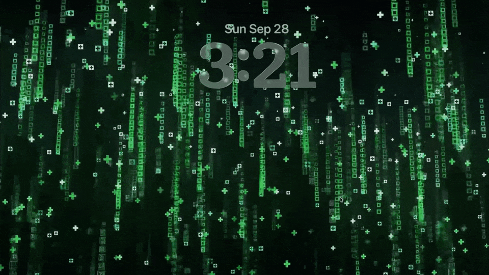
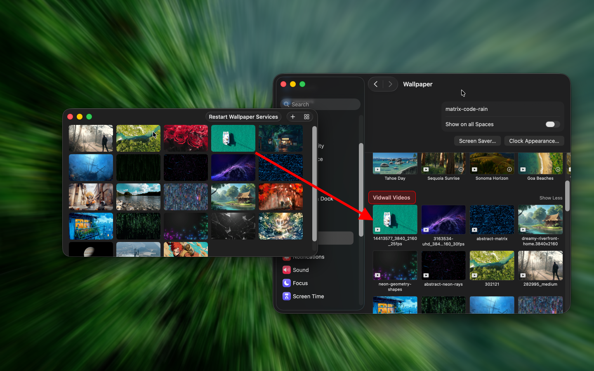

最低操作系统要求：macOS Tahoe 26+


Vidwall Hub 是一款可以轻松将视频（mp4、mov、m4v）导入系统壁纸服务，并在 系统设置 → 墙纸 中用作锁屏动画的工具。支持 macOS 26 与 macOS 27。
在尝试通过 Vidwall 应用同时实现动态壁纸和动态锁屏功能时，由于 macOS 沙盒限制，这一功能无法实现。因此，我将测试后的代码独立成一个新应用 免费提供给大家使用，作为 Vidwall 的补充。macOS 并未提供设置动态锁屏的公开 API。Vidwall Hub 将视频登记到系统 Aerial 壁纸目录，并写入当前壁纸配置；导入后也可在系统设置的墙纸选项中查看或切换。
# 安装（自动到 /Applications）
$ brew install --cask jaywcjlove/tap/vidwall-hub
Vidwall Hub 支持通过 URL 激活工具，并根据 URL 中的视频文件路径参数自动导入视频。
vidwallhub://open?file=/file/to/path/video.mp4
macOS 没有设置动态锁屏的公开 API。Vidwall Hub 仍走系统 Aerial 壁纸通道（用户态，无需管理员权限），目录与 macOS 26 相同：
~/Library/Application Support/com.apple.wallpaper/aerials/manifest/entries.json
~/Library/Application Support/com.apple.wallpaper/aerials/videos/<UUID>.mov
~/Library/Application Support/com.apple.wallpaper/aerials/thumbnails/<UUID>.png
~/Library/Application Support/com.apple.wallpaper/Store/Index.plist
导入时只补丁 Vidwall 自己的分类和资源条目，不会用整份重写覆盖系统自带的 Aerial 目录。
共用流程：
entries.json（只读解析，不整文件重写）。Vidwall Videos 分类与子分类。asset，以补丁方式写入 entries.json（视频地址使用 file:// URL）。Store/Index.plist，将刚导入的 assetID 设为 com.apple.wallpaper.choice.aerials。WallpaperAgent 及相关 Aerial 扩展，让系统重新加载资源。macOS 26：
.mov：原样复制到 aerials/videos/<UUID>.mov。.mp4 / .m4v：通过 AVAssetExportPresetPassthrough 导出为 .mov（不重编码，保留完整时长）。macOS 27：
macOS 27 的 WallpaperAerialsExtension 需要 HEVC 时序可分层（tscl / tsas）。普通用户视频通常没有这些采样组，锁屏第一次解锁后会冻结或变黑。
.mov。Wallpaper 扩展进程，避免拖放时把壁纸设置打崩。资源占用说明：
.mp4 / .m4v）容器封装。.mov 仍是拷贝。entries.json、Index.plist 与素材文件（视频/缩略图）的导入、更新和删除。macOS 15 暂时不支持
/Library/Application Support/com.apple.idleassetsd/Customer/4KSDR240FPS
/Library/Application Support/com.apple.idleassetsd/Customer/entries.json